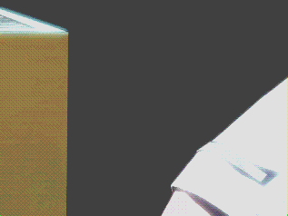

拿取棋子的一段动画
首页
五子棋教室
#1 拿取棋子的一段动画 作者：有志青年 发表时间：2012-5-21 13:23:55
［此帖子已被 有志青年 在 2012-5-21 13:26:06 编辑过］
#2 Re:拿取棋子的一段动画 作者：反转 发表时间：2012-5-21 14:09:33
佐为sama
#3 Re:拿取棋子的一段动画 作者：蟠龙眼 发表时间：2012-5-21 14:16:09
在下只会通过鼠标拿棋子
#4 Re:拿取棋子的一段动画 作者：掌棋如烟 发表时间：2012-5-21 20:02:53
我拿了块手机电池练了一下,把脚砸了
#5 Re:拿取棋子的一段动画 作者：小小亦默 发表时间：2012-5-21 20:29:50
哈哈 如烟姐 你。。。。你。。。
#6 Re:拿取棋子的一段动画 作者：白衣神童小剑魔 发表时间：2012-5-21 20:59:00
这不是 爱乐奕 的百度签名吗
#7 Re:掌棋如烟【==Re:拿取棋子的一段动画==】 作者：黄药师 发表时间：2012-5-21 21:03:16
引用：
原文由 掌棋如烟 发表于 2012-5-21 20:02:53 :
我拿了块手机电池练了一下,把脚砸了
 ,小心比赛的时候掉棋盘被判违例。
,小心比赛的时候掉棋盘被判违例。
#8 Re:拿取棋子的一段动画 作者：鱼岛岛主 发表时间：2012-5-21 21:07:36
是的 这是围棋吧主的签名档。真能把这个做到熟练也是很不错的。
#9 Re:拿取棋子的一段动画 作者：暮雨迟 发表时间：2012-5-21 22:41:08
 360度翻转拈棋手法
360度翻转拈棋手法
#10 Re:拿取棋子的一段动画 作者：悟石 发表时间：2012-5-21 23:59:32
这个手法不太适合五子棋。。。
围棋因为有吃子的情况，所以要提子用双凸棋子比较好。
但是五子棋因为放上就不能动了所以用单面的较好。
那么这样吧棋子在手上来回翻的手势明显不能保证凸面始终在上，所以还是不太合适五子棋啊。。
［ 一期一会 于 2012-7-9 23:31:35 时花20金币送鲜花一朵］
#11 Re:拿取棋子的一段动画 作者：千棋雨 发表时间：2012-7-8 23:54:09
拿电池练棋子把脚砸了。。。真可爱
#12 Re:拿取棋子的一段动画 作者：杜科 发表时间：2012-7-13 12:02:07
围棋围棋，五子五子